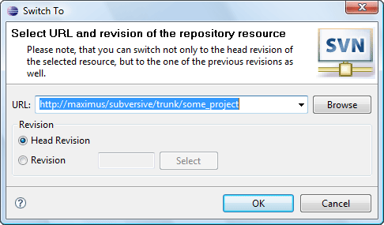

|
|
|
Switching project to a new URL means associating it with another repository location. It's used when the user, for example, want to continue his work with a tag or a branch after creating them or associate the project back with the trunk. To start project URL switching click on 'Team>Switch...' menu item of the resource pop-up menu, 'Switch...' menu item of the 'SVN main menu group' or on the 'Switch project URL...' button on the 'SVN Toolbar'. The 'Switch To Dialog' will appear to provide user a probability of selecting a new location.
|
Tip: |
The user can switch not only to the head revision of the selected resource, but to the one of the previous revisions as well. |
This is how 'Switch To Dialog' looks like:
